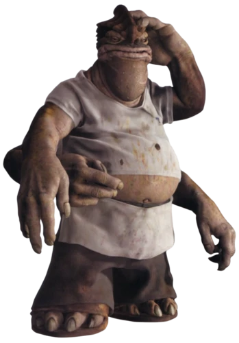

Dexter Jettster
Dexter "Dex" Jettster était un cuisiner Besalisk. Juste avant la Guerre des Clones, Jettster était propriétaire du restaurant Chez Dex à Coco Town. Ayant un passé très divers, soit donc une grande expérience et une grande culture, le Jedi Obi-Wan Kenobi a souvent eu besoin de lui pour avoir des informations.

| Apparaît dans : | L'Attaque des Clones |
|---|---|
| Première apparition : | L'Attaque des Clones |
| Affiliations : | Chez Dex |
| Race : | Besalisk |
| Genre : | Masculin |
| Planète d'origine : | Coruscant |
| Métier : | Cuisinier |
| Côté de la force : | Neutre |
Rôle dans l'histoire

Dexter a indirectement joué un grand rôle dans la Guerre des Clones, en indiquant à Obi-Wan que la pointe empoisonnée (Kamino Saberdart) envoyée par Jango Fett sur la chasseuse de primes Zam Wesell provenait de Kamino.
 tawn we
tawn we
 gregar typho
gregar typho